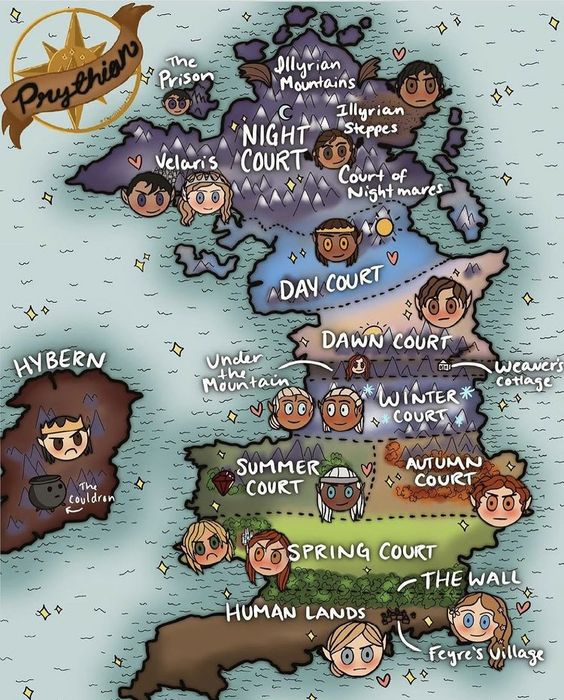

Do inglês, A Court Of Thorns And Roses é o título do primeiro livro e saga escrita por Sarah J Maas. Essa série acompanha um universo onde humanos e seres mágicos, chamados feéricos, coexistem numa "harmonia" extremamente frágil. Ao longo dos cinco livros é abordado guerra, amor, manipulações e estratégias para salvar a vida não só de Prythian como de todo o mundo.

A história é centralizada em Prythian, onde a protagonista vivia inicialmente nas Terras Mortais, logo abaixo da Muralha. Acima desta existe a divisão de sete Cortes, denominadas Corte da Primavera, Corte do Inverno, Corte do Outono, Corte do Verão, Corte do Amanhecer, Corte do Dia e Corte da Noite, sendo cada uma delas governada por um Grande Senhor diferente. Estes são, respectivamente, Tamlin, Beron, Kallias, Tarquin, Thesan, Helion e Rhysand.
As restantes terras feéricas não são tão exploradas na saga, apenas Hybern, na guerra do terceiro livro.
Explora mais sobre a história dos livros e dos personagens aqui, na Larens Acotar Wiki!

Para os leitores que adoram explorar os quizizz da internet sobre seus livros preferidos, agora a Larens Acotar Wiki desenvolveu uma coletânea e testes de conhecimento e personalidade para mergulhares dentro de ACOTAR de uma forma ainda mais divertida e inovadora!
Clica aqui para ires para nosso novo website.